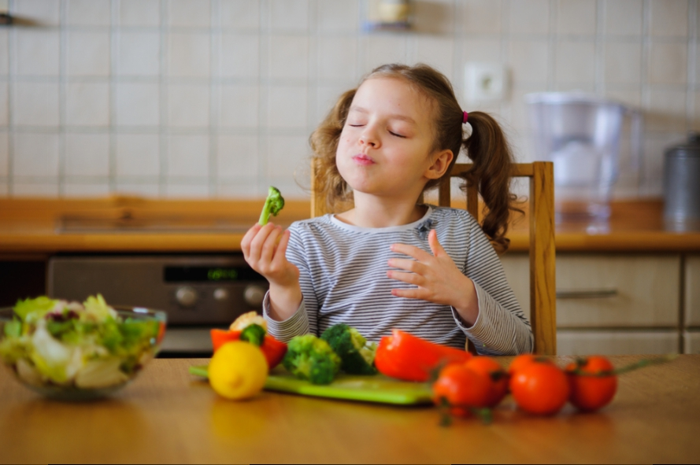
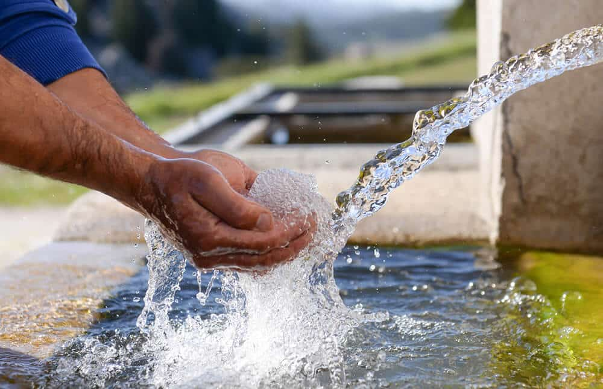
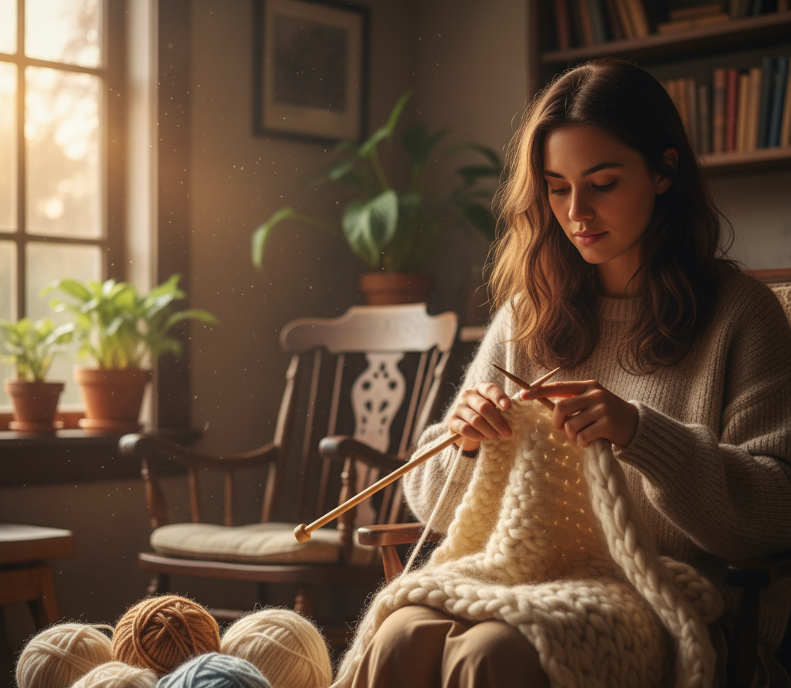
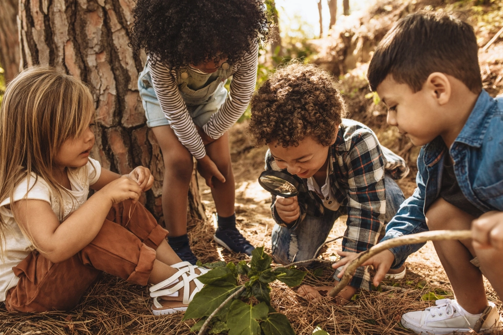

Projeto Luz da Leitura
Incentiva a leitura e o acesso a livros em comunidades com pouca infraestrutura cultural, com bibliotecas itinerantes e rodas de leitura.
Local: Salvador - BA

Conheça os projetos sociais desenvolvidos pela Esperança Viva, que
buscam promover inclusão, educação e solidariedade em comunidades
vulneráveis.
Juntos, transformamos vidas e construímos um
futuro mais justo para todos.

Incentiva a leitura e o acesso a livros em comunidades com pouca infraestrutura cultural, com bibliotecas itinerantes e rodas de leitura.
Local: Salvador - BA
Promove a saúde infantil com oficinas educativas sobre alimentação saudável e cuidados básicos para crianças e mães em bairros vulneráveis.
Local: Fortaleza - CE
Promove o acesso à água potável em comunidades rurais, instalando sistemas de captação e filtragem para garantir saúde e qualidade de vida.
Local: Manaus - AM
Oferece cursos de artesanato e capacitação profissional para mulheres em situação de vulnerabilidade, fortalecendo a autonomia econômica.
Local: João Pessoa - PB
Realiza atividades recreativas, culturais e educativas para crianças em abrigos, incentivando o desenvolvimento social e emocional.
Local: Curitiba - PR
Desenvolve hortas comunitárias e oficinas de agricultura sustentável para famílias urbanas, promovendo alimentação saudável e preservação ambiental.
Local: Porto Alegre - RS